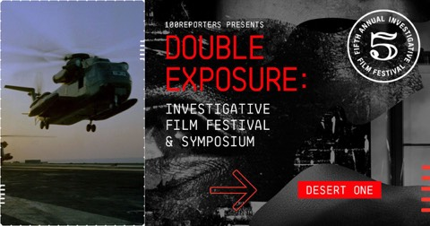

Double Exposure 2019
The fifth edition: October 10-13, 2019 · In person.
Venues: The National Archives, Naval Heritage Center, National Geographic Museum, The Eaton Hotel (Barnett-Aden Room, Beverly Snow Room, Salon, Eaton Cinema), The Eaton Hotel's Crystal Room, Dirty Habit
Programme source: the 2019 festival catalogue (PDF, in the Wayback Machine) and the festival website.
Health & medicineMigration & bordersWomen, gender & sexualityDocumentary craftFunding & distributionDisinformation & truthLegal & safety for reportersLatin America
Films

Desert OneBarbara KoppleOpening Night Citizen KAlex GibneyCenterpiece
Citizen KAlex GibneyCenterpiece The CaveFeras FayyadClosing Night
The CaveFeras FayyadClosing Night BedlamKenneth Rosenberg2019 · 86 min
BedlamKenneth Rosenberg2019 · 86 min Bellingcat: Truth in a Post-Truth WorldHans Pool2019 · 88 min
Bellingcat: Truth in a Post-Truth WorldHans Pool2019 · 88 min Bikram: Yogi, Guru, PredatorEva Orner2019 · 86 min
Bikram: Yogi, Guru, PredatorEva Orner2019 · 86 min Bully. Coward. Victim. The Story of Roy CohnIvy Meeropol2019 · 98 min
Bully. Coward. Victim. The Story of Roy CohnIvy Meeropol2019 · 98 min Dark SunsJulien Elie2019 · 154 min
Dark SunsJulien Elie2019 · 154 min The Preppy Murder: Death in Central ParkRicki Stern, Annie Sundberg2019 · 86 min
The Preppy Murder: Death in Central ParkRicki Stern, Annie Sundberg2019 · 86 min
Shorts
- In Dry WaterKevin Clancy2019 · 14 min
- Lost and FoundOrlando von Einsiedel2019 · 22 min
 Poppy CrashAndalusia Knoll Soloff2019 · 11 min
Poppy CrashAndalusia Knoll Soloff2019 · 11 min- Refuge(e)Sylvia Johnson2019 · 15 min
 The NightcrawlersAlexander A. Mora2019 · 39 min
The NightcrawlersAlexander A. Mora2019 · 39 min- Waiting for TearahJuliana Schatz Preston2019 · 23 min
Forum sessions and events
Thursday, October 11, 2018
- Thu Oct 11 · 9:30amPanel · DX²Supreme Truth: From High School Halls to Hallowed WallsCheryl W. Thompson, Elizabeth Bruenig, Nancy Schwartzman
Thursday, October 10, 2019
- Thu Oct 10 · 9:30 AMPitchDX Access / Pitch
- Thu Oct 10 · 9:30 AMConversationOpening Conversation: Race in FocusWesley Lowery, Michèle Stephenson, Marco Williams
- Thu Oct 10 · 9:30amPanel · DX²Race In FocusMichèle Stephenson, Marco Williams, Wesley Lowery
- Thu Oct 10 · 11:00 AMPanel · DX²Investigative Podcasts: The Sound and the FuryLaura Beil, Jennifer Forde, Samara Freemark, Sarah Larson
- Thu Oct 10 · 1:15 PMPanel · DX²When No One Else Is WatchingLuke Lorentzen, Palika Makam, Emily Taguchi, Yatziri Tovar, Carrie Lozano
- Thu Oct 10 · 2:45 PMPanel · DX²The Visual NewsroomKatie Campbell, Lindsay Crouse, Lauren Feeney, Cassandra Giraldo, Amanda Pike, Zach Toombs, Patricia Aufderheide
- Thu Oct 10 · 4:00 PMPanel · DX²The UndertowRamona Diaz, Courtney Radsch, Andalusia Knoll Soloff, Nanfu Wang, Brenda Coughlin
- Thu Oct 10 · 9:45 PMReceptionOpening Night Party
Friday, October 11, 2019
- Fri Oct 11 · 9:30amPanel · DX²#MeTooAnnie Sundberg, Casey Frank, Emily Michot, Ricki Stern, Janice Page
- Fri Oct 11 · 9:30 AMPanel#MeToo 2.0Casey Frank, Emily Michot, Ricki Stern, Annie Sundberg, Janice Page
- Fri Oct 11 · 9:45 AMPitchDocs in Progress PitchSara Barger, Amy Marquis, Jennifer Huang, Rodrigo Dorfman, Peter Eversoll, cai thomas, Serena Ajbani, Andrea Raby
- Fri Oct 11 · 11:00 AMPanel · DX²Age of ConsentJacqueline Olive, Juliana Schatz Preston, Courtney Symone Staton, Shayna Wilson, Natalie Bullock Brown
- Fri Oct 11 · 1:15 PMPanel · DX²The New TransparencyKarim Amer, Jay Rosen, Claire Wardle, Harlo Holmes
- Fri Oct 11 · 2:45 PMPanelAsk Me Anything: Meet the FundersNathalie Applewhite, Wendy Ettinger, Carrie Lozano, Molly Murphy, Lea Trusty, Chloe Walters-Wallace, Lauren Pabst
- Fri Oct 11 · 4:15 PMPanelThe Big ChillErika Cheung, Delphine Halgand-Mishra, Sally Hayden, Mary Inman, Jeffrey Sterling, Tom Mueller
- Fri Oct 11 · 5:30 PMReceptionFriday Happy Hour
Saturday, October 12, 2019
- Sat Oct 12 · 10:00 AMPitchCrossing BordersAnne Alvergue, Debra McClutchy, Maren Machles, Carrie Cochran, Jason Fitzroy Jeffers, Jess Swanson, Amanda Pike, Neela Banerjee, Nicole…
- Sat Oct 12 · 10:00 AMWorkshopFOIA Workshop for Journalists and FilmmakersKatie Townsend, Gunita Singh
- Sat Oct 12 · 10:00 AMWorkshopOpen Source Investigations and VerificationHilke Schellmann, Christiaan Triebert
- Sat Oct 12 · 10:00 AMWorkshopPro Bono Legal ClinicAlexia Bedat, Edward Baker, Lisa Zycherman, Theodore Frank
- Sat Oct 12 · 11:45 AMWorkshopFact CheckingHilke Schellmann, Laila Al-Arian
- Sat Oct 12 · 11:45 AMWorkshopSolutions Journalism for Investigative FilmTina Rosenberg
- Sat Oct 12 · 11:45 AMWorkshopWhistleblower Protection StrategiesDelphine Halgand-Mishra, Jeffrey Sterling
- Sat Oct 12 · 1:00 PMEventThe Art of Exposure with Halcyon House FellowsSobia Ahmad, Alex Braden, Halim Flowers, Ashley M Freeby, Molly Joyce, Lionel Frazier White III, Janae Williams, Stephanie J Woods
- Sat Oct 12 · 2:00 PMWorkshopDefy Apathy! A Workshop to Build Public Trust in JournalismEric Matthies, Robin Bell, Kenyatta Cheese, Felix Salmon, Jenn Topper, Michelle Vaughan
- Sat Oct 12 · 2:00 PMWorkshopFinding CharacterSusanne Reber
- Sat Oct 12 · 2:00 PMWorkshopGrant Writing WorkshopDana Merwin, Heidi Reinberg
- Sat Oct 12 · 10:30 PMReceptionClosing Night Party
People
Filmmakers 17
- Sarah Anthony
- Kevin Clancy
- Orlando von Einsiedel
- Julien Elie
- Feras Fayyad
- Alex Gibney
- Sylvia Johnson
- Barbara Kopple
- Ivy Meeropol
- Alexander A. Mora
- Eva Orner
- Hans Pool
- Juliana Schatz Preston
- Kenneth Rosenberg
- Andalusia Knoll Soloff
- Ricki Stern
- Annie Sundberg
Moderators 10
- Patricia Aufderheide
- Natalie Bullock Brown
- Brenda Coughlin
- Harlo Holmes
- Sarah Larson
- Carrie Lozano
- Eric Matthies
- Tom Mueller
- Lauren Pabst
- Janice Page
Panelists & speakers 91
- Sobia Ahmad
- Serena Ajbani
- Anne Alvergue
- Karim Amer
- Nathalie Applewhite
- Neela Banerjee
- Sara Barger
- Laura Beil
- Robin Bell
- Alex Braden
- Suzette Brewer
- Elizabeth Bruenig
- Katie Campbell
- Kenyatta Cheese
- Erika Cheung
- Carrie Cochran
- Michael Connor
- Lindsay Crouse
- Angelica Das
- Ramona Diaz
- Rodrigo Dorfman
- Wendy Ettinger
- Peter Eversoll
- Margaux Ewen
- Lauren Feeney
- Halim Flowers
- Jennifer Forde
- Casey Frank
- Ashley M Freeby
- Samara Freemark
- Cassandra Giraldo
- Delphine Halgand-Mishra
- Sally Hayden
- Hannah Hearn
- Julia Lowrie Henderson
- Angela M. Hill
- Melissa Houghton
- Jennifer Huang
- Lionel Frazier White III
- Mary Inman
- Jason Fitzroy Jeffers
- Will Jenkins
- Molly Joyce
- Luke Lorentzen
- Wesley Lowery
- Carrie Lozano
- Maren Machles
- Palika Makam
- Amy Marquis
- Olivia Martin
- Debra McClutchy
- Emily Michot
- Molly Murphy
- Jacqueline Olive
- Janice Page
- Andrea Passafiume
- Amanda Pike
- Juliana Schatz Preston
- Andrea Raby
- Courtney Radsch
- Sara Rafsky
- Jay Rosen
- Felix Salmon
- Ricardo Sandoval-Palos
- Nancy Schwartzman
- Andalusia Knoll Soloff
- Courtney Symone Staton
- Michèle Stephenson
- Jeffrey Sterling
- Ricki Stern
- Joel Stonington
- Annie Sundberg
- Jess Swanson
- Emily Taguchi
- cai thomas
- Cheryl W. Thompson
- Zach Toombs
- Jenn Topper
- Yatziri Tovar
- Christiaan Triebert
- Lea Trusty
- Nicole Tsien
- Michelle Vaughan
- Chloe Walters-Wallace
- Nanfu Wang
- Claire Wardle
- Aisha White
- Janae Williams
- Marco Williams
- Shayna Wilson
- Stephanie J Woods
Workshop leaders 15
- Laila Al-Arian
- Edward Baker
- Alexia Bedat
- Theodore Frank
- Delphine Halgand-Mishra
- Dana Merwin
- Susanne Reber
- Heidi Reinberg
- Tina Rosenberg
- Hilke Schellmann
- Gunita Singh
- Jeffrey Sterling
- Katie Townsend
- Christiaan Triebert
- Lisa Zycherman
Film subjects 9
- David Aaron
- Kevin Hermening
- Wade Ishimoto
- John Limbert
- Michael Metrinko
- Gerald Rafshoon
- James Q. Roberts
- Ed Seiffert
- Cyntia Seiffert